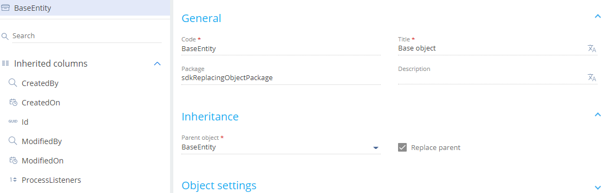

Конфигурационный элемент типа Объект (Object) — это бизнес-сущность, которая на уровне серверного ядра позволяет объявить новый класс ORM-модели. На уровне базы данных создание объекта означает создание записи таблицы с таким же именем, как у созданного объекта, и с таким же набором колонок. То есть в большинстве случаев каждый объект в системе является системным представлением одной физической таблицы в базе данных. Назначение объекта — back-end разработка в приложении Creatio.
Виды объектов, которые позволяет добавить Creatio IDE, представлены значениями выпадающего списка Добавить (Add) панели инструментов рабочей области раздела Конфигурация (Configuration).
Виды объектов представлены на рисунке ниже.
Подробнее о видах конфигурационных элементов читайте в статье Операции в Creatio IDE.
Объект представлен схемой типа Объект (Object) выпадающего списка Тип (Type) панели инструментов рабочей области раздела Конфигурация (Configuration). В схеме объекта описывается набор колонок, индексов и методов объекта. Платформа Creatio не ограничивает количество колонок объекта. Количество колонок в объекте ограничивается максимально допустимым количеством столбцов в таблицах базы данных, которую использует клиент.
Тип схемы объекта представлен на рисунке ниже.
Подробнее о типах конфигурационных элементов читайте в статье Операции в Creatio IDE.
Реализовать объект
Объект представлен видом схемы Объект (Object).
Чтобы реализовать объект:
- Перейдите в раздел Конфигурация (Configuration) и выберите пользовательский пакет, в который будет добавлена схема.
-
На панели инструментов реестра раздела нажмите Добавить —> Объект (Add —> Object).
-
В дизайнере объекта заполните свойства схемы.
Основные свойства схемы:
- Код (Code) — название схемы (обязательное свойство). Начинается с префикса (по умолчанию Usr), который указан в системной настройке Префикс названия объекта (Prefix for object name, код SchemaNamePrefix). Может содержать символы латинского алфавита и цифры. Допустимая длина имени объекта — 128 символов. На базах Oracle ниже версии 12.2 не допускаются к использованию объекты с длиной имени более 30 символов.
- Заголовок (Title) — локализуемый заголовок схемы (обязательное свойство).
- Пакет (Package) — пользовательский пакет, в котором создается схема. Заполняется автоматически и недоступно для редактирования.
- Описание (Description) — локализуемое описание схемы.
-
В дизайнере объекта выберите родительский объект.
Чтобы объект наследовал функциональность другого объекта, в выпадающем списке свойства Родительский объект (Parent object) схемы выберите схему объекта, функциональность которого планируется наследовать. Например, чтобы наследовать функциональность базовой схемы объекта BaseEntity в качестве родительского объекта укажите схему BaseEntity. В свойство Унаследованные колонки (Inherited columns) схемы объекта автоматически добавляются колонки, которые унаследованы от родительского объекта.
- В дизайнере объекта выберите колонку, которая соответствует идентификатору объекта. Идентификатор (Id) — системная колонка, которая используется в качестве первичного ключа в таблице базы данных (обязательное свойство). Для этого воспользуйтесь инструкцией, которая приведена в пункте Установить идентификатор объекта.
- В дизайнере объекта добавьте индекс объекта (опционально). Для этого воспользуйтесь инструкцией, которая приведена в пункте Добавить индекс объекта.
- В дизайнере объекта настройте каскадную связь (опционально). Для этого воспользуйтесь инструкцией, которая приведена в пункте Настроить каскадную связь.
-
На панели инструментов дизайнера объекта нажмите Опубликовать (Publish) для создания соответствующей таблицы в базе данных.
Кнопка Опубликовать (Publish) позволяет генерировать статический контент и обновлять структуру базы данных. При этом компиляция конфигурации не выполняется. Это позволяет ускорить разработку объектов и замещающих объектов. Компиляция при публикации объекта необходима, если при редактировании встроенного процесса объекта он был сохранен, но не был опубликован в дизайнере процессов. Чтобы компилировать конфигурацию, генерировать статический контент и обновлять структуру базы данных, в выпадающем меню кнопки Опубликовать (Publish) выберите Опубликовать и компилировать (Publish and compile).
Установить идентификатор объекта
Поскольку объект в системе является представлением таблицы в базе данных, то он обязательно должен содержать колонку-идентификатор.
Способы установки идентификатора объекта:
- Если свойство Родительский объект (Parent object) — базовый объект, то свойство Идентификатор (Id) заполняется автоматически.
- Если свойство Родительский объект (Parent object) — пользовательский объект, то свойство Идентификатор (Id) заполняется вручную.
Чтобы добавить пользовательский идентификатор:
-
На панели свойств в контекстном меню узла Колонки (Columns) нажмите
 —> Другие —> Уникальный идентификатор (Other —> Unique identifier).
—> Другие —> Уникальный идентификатор (Other —> Unique identifier). -
В дизайнере объекта заполните свойства колонки.
Основные свойства колонки:
- Код (Code) — название колонки (обязательное свойство). Начинается с префикса (по умолчанию Usr), который указан в системной настройке Префикс названия объекта (Prefix for object name, код SchemaNamePrefix). Может содержать символы латинского алфавита и цифры. Значение свойства Код (Code) не должно совпадать со значением аналогичного поля родительского объекта колонки. В другом случае, при попытке опубликовать объект, отображается сообщение об ошибке.
- Заголовок (Title) — локализуемый заголовок колонки (обязательное свойство).
- Тип данных (Data type) — тип данных, которые содержатся в колонке. Заполняется автоматически в соответствии с типом колонки, которая была выбран при добавлении колонки. Недоступно для редактирования.
- Описание (Description) — локализуемое описание колонки.
- Обязательное (Required) — обязательность колонки. Выберите "Да" ("Yes"), поскольку колонка типа Уникальный идентификатор (Unique identifier) является обязательной для объекта. При попытке сохранить схему объекта без колонки типа Уникальный идентификатор (Unique identifier) отображается соответствующее сообщение.
- Значение по умолчанию (Default value) — значение колонки по умолчанию. Чтобы установить значение по умолчанию, воспользуйтесь инструкцией, которая приведена в пункте Установить значение по умолчанию для колонки типа Уникальный идентификатор.
-
Режим использования (Usage mode) — выберите "Расширенный" ("Advanced").
Режимы использования колонок, которые доступны в Creatio IDE:
- Общие (General) — стандартный режим колонок в приложении.
- Расширенный (Advanced) — колонка отображается в конфигурации и доступна для использования в приложении.
- Никогда (None) — колонка отображается в конфигурации как системная и недоступна для использования в приложении.
Установить значение по умолчанию для колонки типа Уникальный идентификатор
Чтобы установить значение по умолчанию для колонки типа Уникальный идентификатор (Unique identifier):
- В свойстве Значение по умолчанию (Default value) нажмите на
/scr_edit_button.png) .
. -
Заполните свойства значения по умолчанию:
- Тип значения (Default value type) — выберите "Cистемная переменная" ("System variable").
- Cистемная переменная (System variable) — выберите "Новый идентификатор" ("New Id"), поскольку идентификаторы должны быть уникальными.
Добавить индекс объекта
Кроме колонок Creatio IDE позволяет добавить в объект индексы, которые при публикации объекта будут автоматически созданы в таблице базы данных.
Способы добавления индекса объекта:
-
Индекс по одной колонке. В этом случае в блоке свойств Поведение (Behavior) установите признак Индексируемая (Indexed). По умолчанию справочные колонки — индексируемые.
- Составной индекс. Для этого воспользуйтесь инструкцией, которая приведена ниже.
Чтобы добавить составной индекс объекта:
- На панели свойств в контекстном меню узла Индексы (Indexes) нажмите .
-
Заполните свойства индекса:
- Код (Code) — название индекса (обязательное свойство).
- Уникальный (Unique) — установите признак, если для колонок индекса необходимо задать ограничение целостности (исключить возможность вставки повторяющихся комбинаций значений).
- Колонки индекса (Index Columns) — выберите колонки, которые необходимо добавить в индекс. Для этого в блоке свойств Колонки индекса (Index Columns) нажмите Добавить (Add), выберите колонку объекта и укажите направление сортировки.
Настроить каскадную связь
Creatio IDE позволяет настроить каскадную связь только для колонки типа Справочник (Lookup).
Чтобы настроить каскадную связь:
-
Добавьте колонку типа Справочник (Lookup) (опционально). Для этого на панели свойств в контекстном меню узла Колонки (Columns) нажмите
—> Справочник (Lookup). -
В блоке свойств Источник данных (Data source) настройте каскадную связь.
Способы настройки каскадной связи:
- Признак Не контролировать целостность (Do not control integrity).
- Опции пункта При удалении значения справочника (On lookup value deletion).
Рассмотрим работу каскадной связи на примере объекта Контакт (Contact), который по справочной колонке [AccountId] связан с объектом Контрагент (Account). Для этого в поле Выбор объекта (Lookup) выберите Account.
Варианты настройки каскадной связи:
- Если установлен признак Не контролировать целостность (Do not control integrity), то выполняется удаление контрагента. При этом не удаляются контакты, которые связаны с текущим контрагентом.
- Если не установлен признак Не контролировать целостность (Do not control integrity) и выбрана опция Блокировать удаление, если есть связанные записи в текущем объекте с этим значением (Block deletion if there are connected records in current object with this value), то удаление контрагента заблокировано, если присутствуют контакты, которые связаны с текущим контрагентом. В этом случае приложение выдает предупреждающее сообщение. После подтверждения выполняется удаление удаление контрагента. При этом не удаляются контакты, которые связаны с текущим контрагентом.
- Если не установлен признак Не контролировать целостность (Do not control integrity) и выбрана опция Удалять записи из текущего объекта с этим значением (Delete records from current object with this value), то выполняется удаление контрагента вместе с удалением контактов, которые связаны с текущим контрагентом.
Реализовать замещающий объект
Замещающий объект представлен видом схемы Замещающий объект (Replacing object).
Чтобы реализовать замещающий объект:
- Перейдите в раздел Конфигурация (Configuration) и выберите пользовательский пакет, в который будет добавлена схема.
- Установите зависимости пакета. В зависимости обязательно добавьте пакет, который содержит замещаемый объект.
-
На панели инструментов реестра раздела нажмите Добавить —> Замещающий объект (Add —> Replacing object).
-
В дизайнере объекта выберите родительский объект.
Чтобы объект замещал функциональность базового объекта, в выпадающем списке обязательного свойства Родительский объект (Parent object) схемы выберите схему объекта, которую планируется заместить. Например, чтобы замещать функциональность базовой схемы объекта BaseEntity в качестве родительского объекта укажите схему BaseEntity. В свойство Унаследованные колонки (Inherited columns) схемы объекта автоматически добавляются колонки, которые унаследованы от родительского объекта. После выбора родительского объекта остальные свойства объекта заполняются автоматически.
 - В дизайнере объекта реализуйте функциональность, которая отличает замещающий объект от замещаемого.
-
На панели инструментов дизайнера объекта нажмите Опубликовать (Publish) для создания соответствующей таблицы в базе данных.
Кнопка Опубликовать (Publish) позволяет генерировать статический контент и обновлять структуру базы данных. При этом компиляция конфигурации не выполняется. Это позволяет ускорить разработку объектов и замещающих объектов. Компиляция при публикации объекта необходима, если при редактировании встроенного процесса объекта он был сохранен, но не был опубликован в дизайнере процессов. Чтобы компилировать конфигурацию, генерировать статический контент и обновлять структуру базы данных, в выпадающем меню кнопки Опубликовать (Publish) выберите Опубликовать и компилировать (Publish and compile).
Подробнее о замещении конфигурационных элементов читайте в статье Замещение конфигурационных элементов.
Деактивировать записи объекта
Creatio предоставляет возможность деактивировать записи объектов приложения для исключения их из бизнес-логики. Это может понадобиться, например, если данные устарели и больше не используются. Функциональность деактивации записей объектов доступна для всех объектов.
Чтобы деактивировать записи объекта:
- Откройте схему объекта, записи которой планируется деактивировать.
-
В блоке свойств Поведение (Behavior) установите признак Разрешить деактивацию записей (Allow records deactivation).
- На панели инструментов дизайнера объекта нажмите Опубликовать (Publish).
Автоматическая фильтрация неактивных записей доступна для отдельных элементов интерфейса.
Элементы интерфейса, для которых доступна автоматическая фильтрация записей:
- Выпадающий список.
- Окно выбора значения из справочника.
- Быстрый фильтр.
Элементы интерфейса, для которых недоступна автоматическая фильтрация записей:
- Страница с содержимым справочников.
- Раздел.
- Расширенный фильтр.
Параметр UseRecordDeactivation класса EntitySchemaQuery позволяет управлять фильтрацией по неактивным записям. По умолчанию — false. Если для параметра UseRecordDeactivation установить значение true, то в запрос на выборку данных из объекта, где включена деактивация записей, добавляется фильтр, который исключает неактивные записи.
Пример деактивации записей на front-end стороне приведен ниже.
Пример деактивации записей на back-end стороне приведен ниже.
Результирующий SQL-запрос приведен ниже.